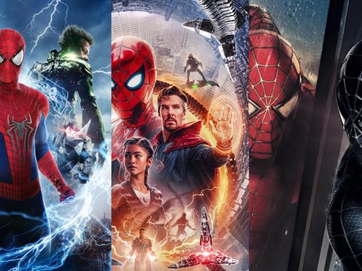

My Dream Car | My Favorite Vaction Spot | Where I was born |
My Favorite Show |
My Current Location |
My Favorite Video Game | Current Fashion Trends | Citation Page |
Peter Parker, a young high school student is bitten by a radioactive spider and gains the abilities to climb walls, shoot webs, and super human strength. Created by Stan Lee, Spider-Man was originally a comic book and turned into films later on due to his popularity. Spider-Man is one of the most popular superheroes created by Marvel. He has appeared in several TV series, movies, and comics. The actors that play him in the movies are Tobey Maguire, Andrew Garfield, and Tom Holland. Spider-Man is an intelligent high school teenager who develops powers after being bitten by a radioactive spider, he struggles with his life when he first discovers his powers but he puts them to good use to help others.
Read about the history of the Spider-Man comics and movies!Click on a section of the image to watch the trailers of each movie!
Rating all the Spider-Man movies from 1-10:
| Movie Name | Rating |
|---|---|
| Spider-Man (2002) | 9/10 |
| Spider-Man 2 (2004) | 7/10 |
| Spider-Man 3 (2007) | 8/10 |
| The Amazing Spider-Man (2012) | 6/10 |
| The Amazing Spider-Man 2 (2014) | 5/10 |
| Captain America Civil War (2016) | 3/10 |
| Spider-Man: Homecoming (2017) | 10/10 |
| Spider-Man: Into the Spider-Verse (2018) | 8/10 |
| Avengers Infinity War (2018) | 10/10 |
| Avengers Endgame (2019) | 10/10 |
| Spider-Man: Far From Home (2019) | 9/10 |
| Spider-Man: No Way Home (2021) | 10/10 |
Movie description of my top 3 Spider-Man movies: